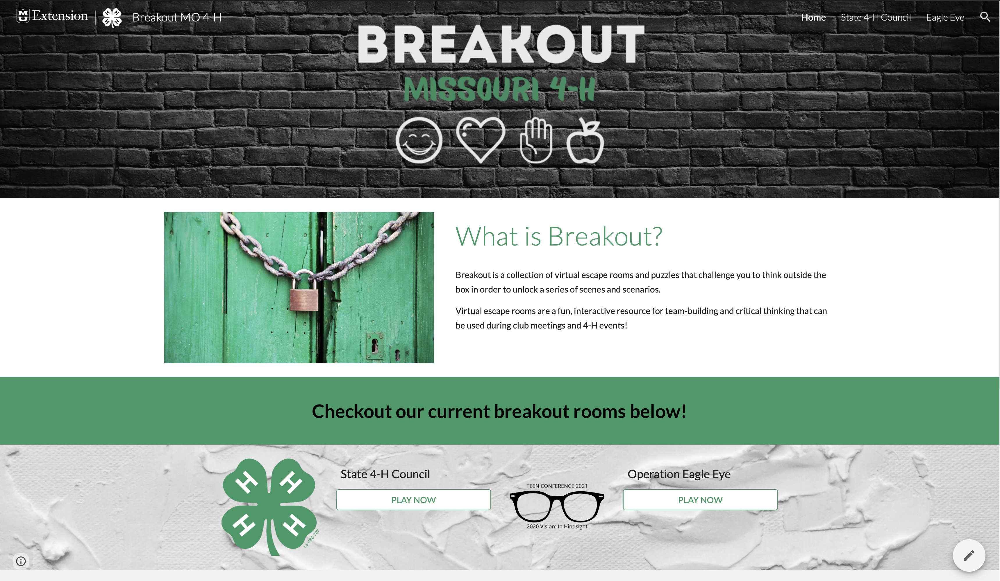
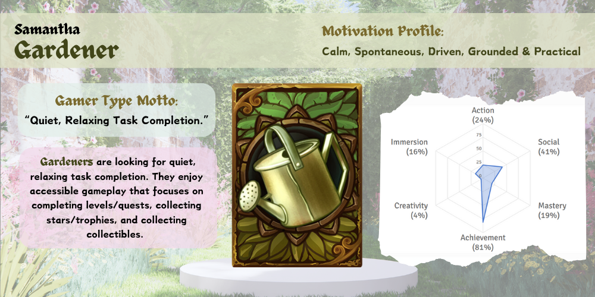

Instructional Design in Virtual Reality
Mizzou Student Success Center Tour and Resources
Virtual Reality is an immersive learning experience that allows users to utilize multiple senses to interact with their surroundings like how they would in real-life. For my project in this area, I created a scale model of the Student Success Center (SSC) at the University of Mizzou. The intention of the project to create a resource that allows students to explore the resources the SSC has to offer while also allowing them to become familiar with it spatially. During their first year of college, access to the resources we house: The Writing Center, The Learning Center (tutoring), TRiO, the Career Center and more play a vital role in student success. Many of my students over the last few years have expressed growing anxiety about exploring new spaces. They also find our building difficult to navigate.
Conceptually, I am really proud of this project. I learned a lot along the way. The composition of a Virtual Reality experience is complex with a lot of foundational and mechanical pieces that must be built before you can even begin to add the learning technologies. I know that the platform that we used in class for this project had its limitations. If it was fleshed out in its entirety, I would love to see NPCs for conversational interactions and more interactive learning opportunities rather than just displayed information.

Missouri 4-H Breakout Room Website
During my time as a state faculty member with Missouri 4-H. My specialty areas were leadership, civic engagement and healthy living. One of our challenges during the pandemic was taking a largely in-person experience at the state level and creating online opportunities for engagement. In 2021, we were all disappointed when we had to host our major summer youth conferences online. However, it did give me the opportunity to create some virtual “escape rooms” in Google Sites that our students could complete together in small groups.
I enjoyed creating these games and exploring the possibilities in Google Sites. I had chosen Google Sites because I could integrate Google Forms, which has a built-in validation system, which lends nicely to self-paced puzzles like the ones I created. It’s not as interactive as I think learners would like and the story development could use some work, but overall, it was received well. It was also a good example to our educators in each of the counties that even with limited technological resources, we can create online educational experiences for our students.
https://sites.google.com/view/breakout-mo-4-h/home
Designing Games for Learning: Gaming Blog (In-Progress)
I am currently in IS_LT 7355, Designing Games for Learning. As a part of the class, we have to keep a blog of our gaming experiences throughout the semester. This will log both our games that we create and our experiences with games that we play throughout the semester. I have chosen to play Papers, Please as my mentor game, which is an established game with educational themes that I will refer to throughout the semester as we continue to build on our understanding of how to create games that have elements designed with learning outcomes.
So far, I've learned that I am the type of gamer that is called a "Gardener."" As a Garderner, I enjoy games that are low-stakes and have quiet, relaxing task completion the majority of the time I play games. As a working professional, I find that I don't have as much time to play games as I might have had in the past, so when I do get to play, I enjoy games that contain stimulating puzzles and logic.
